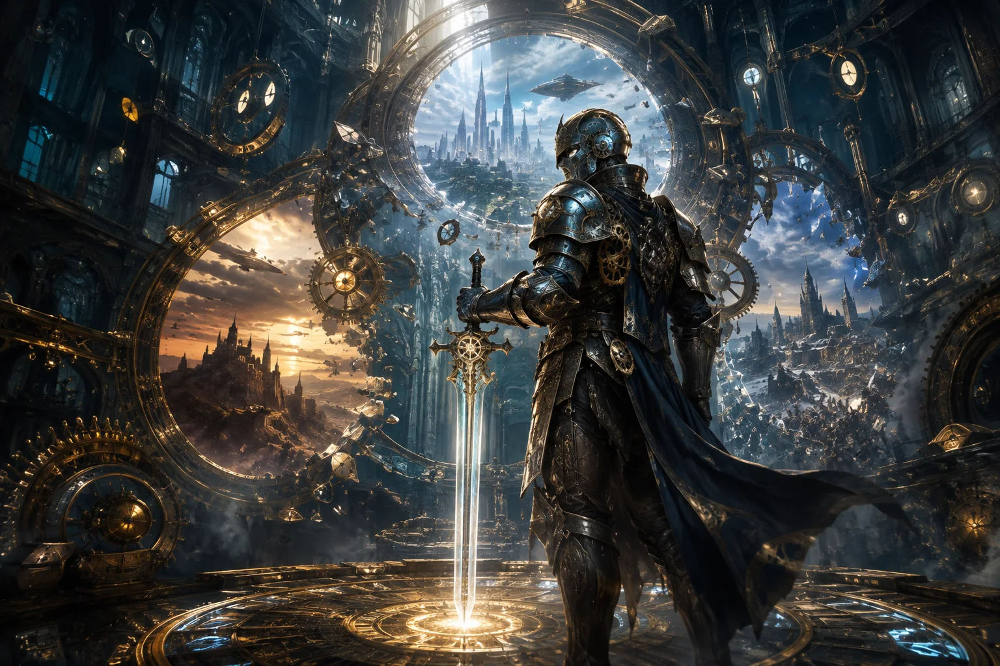
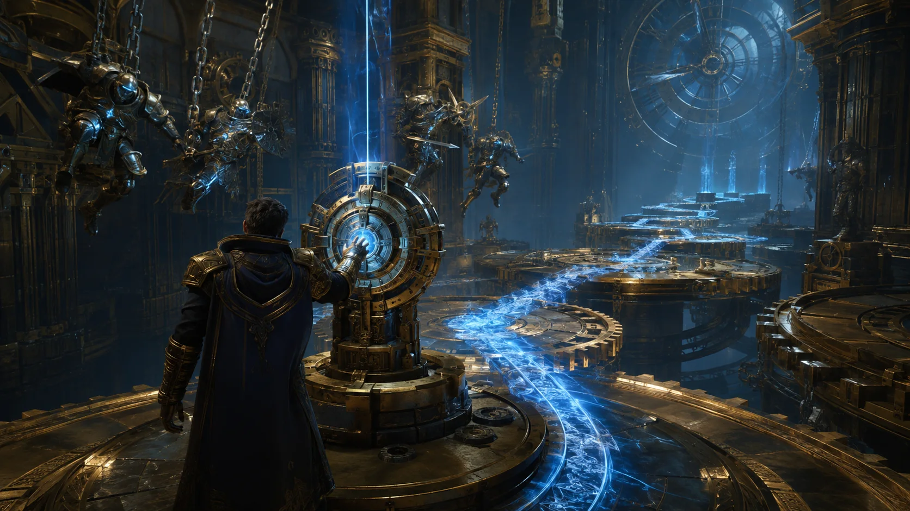

TIME MANIPULATION
Freeze, rewind, and accelerate mechanisms to solve spaces and reshape combat.

Bend time inside a clockwork empire and rewrite the moment that ended the world.
FOLLOW DEVELOPMENTFreeze impossible machinery, restore shattered moments, and duel mechanical guardians across an empire built from the remains of broken timelines.

Freeze, rewind, and accelerate mechanisms to solve spaces and reshape combat.
Interlocking machines make each room feel like a physical mystery rather than a switch hunt.
Step between alternate versions of the empire and uncover the cost of changing history.